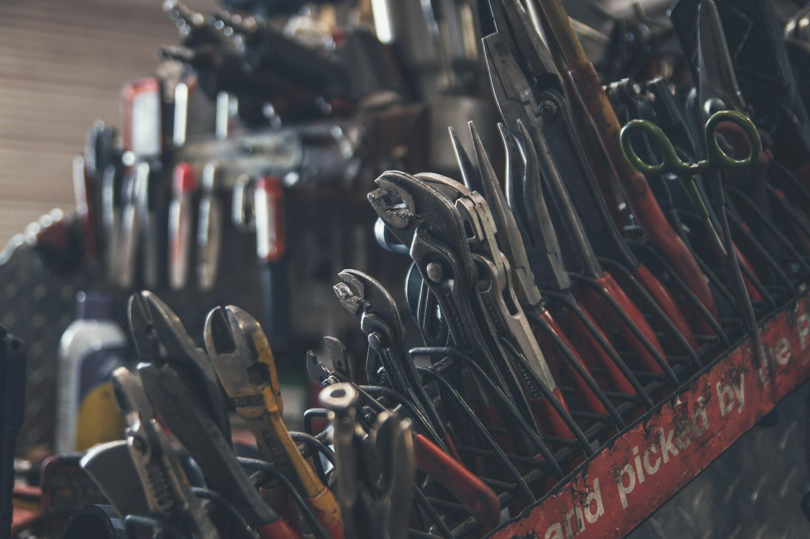

Vi får det att fungera. Hemma. På jobbet. Överallt.
Bygg, renovering och fastighetsservice i Stockholm
Nexus Service hjälper privatpersoner, företag, fastighetsägare och bostadsrättsföreningar med både mindre och större projekt, från löpande underhåll till kompletta renoveringar.

Vad kan vi hjälpa dig med?

Ska du renovera?
Kök, badrum eller hela bostaden. Vi river, bygger, snickrar och målar.

Behöver något målas?
Väggar, tak, snickerier och fasader, invändigt och utvändigt.

Sitter du i en styrelse?
Skötsel, underhåll, utemiljö och snöröjning för föreningar och fastighetsägare.

Ska gården skötas?
Gräsklippning och häckar på sommaren, snöröjning på vintern.
Våra tjänster
Vi har flera yrken i samma företag. Därför kan vi ta både små jobb och projekt där flera moment hänger ihop, till exempel när ett badrum ska rivas, byggas om och målas.

Bygg och reparation
Vi utför byggarbeten och reparationer i bostäder, lokaler och fastigheter. Det kan gälla allt från att laga en skada eller byta en dörr till att flytta en vägg eller bygga ett förråd.
Läs mer om bygg och reparationSnickeri
Vi gör allt inom snickeri, från mindre reparationer till större projekt. Golv, lister, foder, trappor, altaner och platsbyggd förvaring är vanliga uppdrag.
Läs mer om snickeriRenovering
Vi renoverar kök, badrum, hela bostäder och lokaler. Eftersom vi har rivning, bygg, snickeri och måleri i samma företag behöver du inte samordna flera olika hantverkare.
Läs mer om renoveringTakarbeten
Vi lagar läckage, byter skadade takpannor och plåtdetaljer och ser över hängrännor och stuprör. Vi börjar med att gå igenom taket och berättar vad som behöver göras nu och vad som kan vänta.
Läs mer om takarbetenRivning
Vi river väggar, kök, badrum och andra utrymmen på ett säkert och effektivt sätt. Golv och ytor som ska vara kvar skyddas, och vi sorterar och kör bort rivningsmaterialet.
Läs mer om rivningMåleri
Vi målar invändigt och utvändigt med fokus på kvalitet och finish. Det mesta av resultatet avgörs av förarbetet, så vi spacklar, slipar och grundar ordentligt innan vi målar.
Läs mer om måleriFastighetsskötsel
Vi sköter fastigheter, trapphus och gemensamma utrymmen löpande. Vid varje besök går vi igenom fastigheten, åtgärdar det som ingår i avtalet och meddelar er om sådant som behöver planeras.
Läs mer om fastighetsskötselUnderhåll av fastigheter
Vi utför invändigt och utvändigt underhåll, till exempel punkter i föreningens underhållsplan. Fasader, fönster, entréer, förråd och soprum är vanliga uppdrag. Vi kan också hjälpa till att prioritera när allt inte ryms i årets budget.
Läs mer om underhåll av fastigheterGräsklippning, häckar och trädgård
Vi klipper gräs regelbundet under säsongen, trimmar häckar och buskar och tar hand om planteringar. På hösten hämtar vi löv och städar inför vintern.
Läs mer om gräsklippning, häckar och trädgårdSnöröjning och halkbekämpning
Vi skottar och sandar entréer, gångar och parkeringar så att de går att använda även när det har snöat. Avtal tecknas inför säsongen, så att det är klart vem som ansvarar när snön kommer.
Läs mer om snöröjning och halkbekämpning
För bostadsrättsföreningar och fastighetsägare
Många föreningar har en leverantör för trapphusen, en för trädgården, en för snön och flera till för reparationer. Vi kan ta hand om det mesta i ett och samma avtal, med en kontaktperson som känner fastigheten.
- Löpande skötsel av trapphus och gemensamma utrymmen
- Gräsklippning, häckar och lövhämtning
- Snöröjning och halkbekämpning
- Reparationer och planerat underhåll

Om Nexus Service
Vi erbjuder tjänster inom bygg, reparation, renovering och fastighetsskötsel. Med fokus på kvalitet, noggrannhet och ett professionellt utfört arbete försöker vi alltid hitta rätt lösning för varje kund och projekt.
Vi tar hand om ditt bygg- och fastighetsprojekt från idé till färdigt resultat.
Mer om ossKontakta oss för en kostnadsfri offert
Berätta vad du behöver hjälp med, så återkommer vi med ett pris och ett förslag på när vi kan börja.